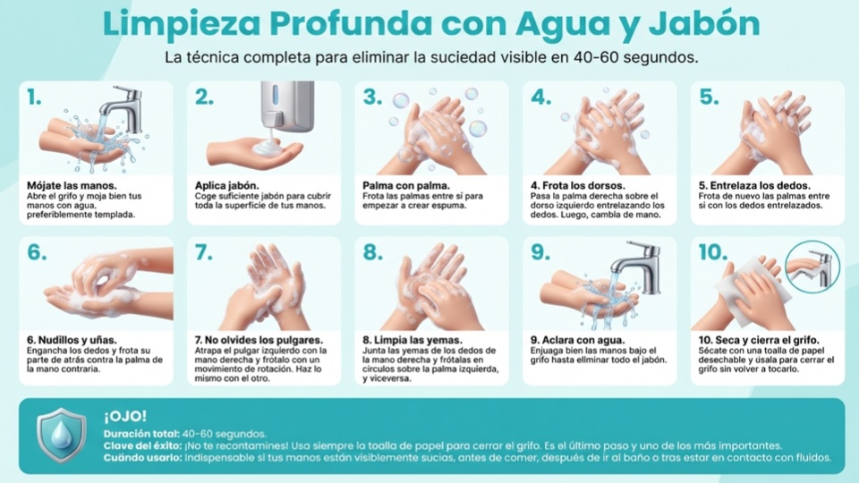
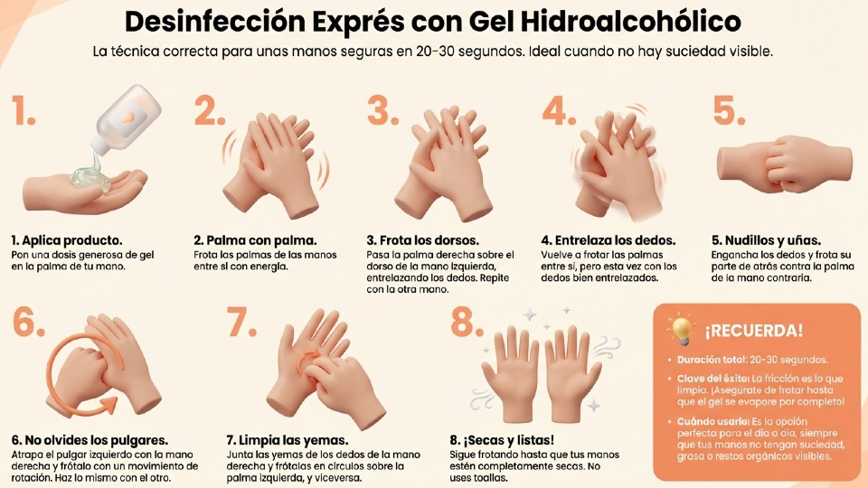

Lavarse las manos es la medida más sencilla y eficaz para prevenir infecciones cuando visitas un hospital o cuidas de tu salud.
Como paciente o familiar, tú también puedes ayudar a detener las infecciones lavándote las manos en estos momentos clave.
-
Al entrar y al salir
De la habitación, de la consulta o del centro sanitario.
-
Antes de comer
O de dar de comer o ayudar con la medicación a la persona ingresada.
-
Después de ir al baño
Siempre con agua y jabón, y secándose bien.
-
Después de toser o estornudar
También después de sonarse la nariz o de tocar pañuelos usados.
-
Antes y después de tocar al paciente
Y sobre todo si va a tocar heridas, vendajes, sondas o vías.
Puede preguntarlo. Si tiene dudas, pregunte a quien le atiende si se ha lavado las manos: forma parte de una atención segura y los profesionales lo agradecen.
Usa esta técnica cuando tus manos estén visiblemente sucias o después de ir al baño.

Es la forma más rápida y eficaz para uso habitual en el hospital (si las manos no tienen suciedad visible).
